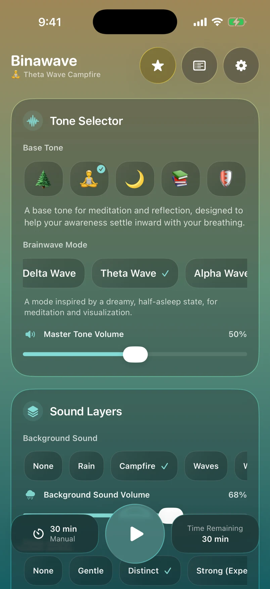
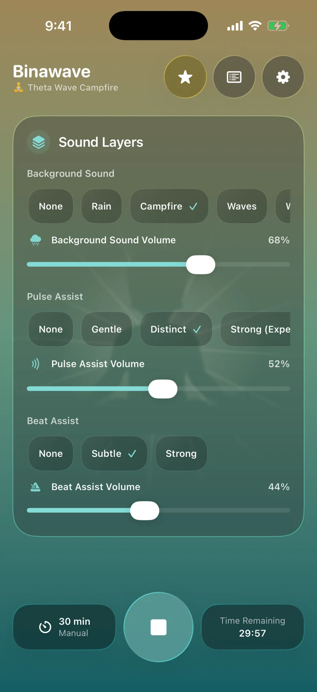
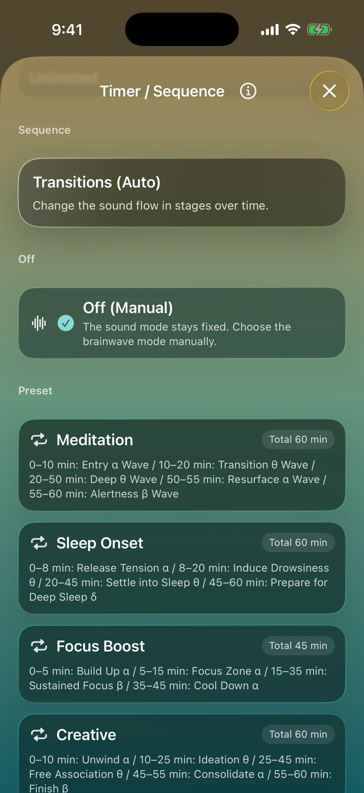
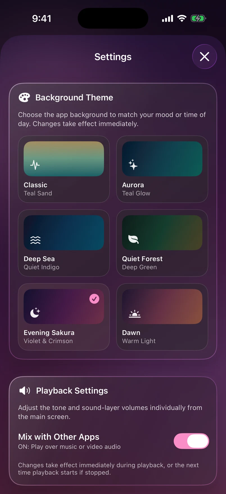

01 / FOCUS
Make room for focus.
Open a book. Settle into a single task. Give yourself a space in sound before you begin.

BINAURAL BEATS, YOUR WAY
A little focus. A moment to unwind.
Blend binaural beats and ambient sounds
into time that feels like yours.
Free download · In-app purchases

Sound that meets you where you are.
For iPhone & iPad · iOS 18 or later
SCROLL TO EXPLORE ↓01 / FIND YOUR MOMENT
Small transitions. A little space.
Your listening time, at your own pace.
01 / FOCUS
Open a book. Settle into a single task. Give yourself a space in sound before you begin.
02 / UNWIND
Let a busy day slow down. Layer rain or ocean sounds into a little time for yourself.
03 / MEDITATE
Close your eyes and notice your breathing. Bring a simple tone to your meditation or mindfulness routine.
02 / DESIGNED AROUND YOU
Choose. Layer. Play.
Simple controls, personal listening.
Combine a base tone with a brainwave mode to create your own binaural beats. Begin with a sound that sparks your curiosity.
Some tones, ambient sounds, timers and sequences are available with Premium.
Build your soundscape with ambient layers. Choose rain, campfire, waves, wind or pink noise to complement your tone.
Some tones, ambient sounds, timers and sequences are available with Premium.

From a five-minute pause to a longer session. Timers and sequences let you shape the flow of your listening time.
Some tones, ambient sounds, timers and sequences are available with Premium.

Personalize your screen with background themes. Quiet colors and light bring a visual touch to your daily listening ritual.
Some tones, ambient sounds, timers and sequences are available with Premium.

Keep listening with the screen closed.
Save mindful minutes with your permission.
Mix with audio from other apps with Premium.
03 / THE BEAUTY OF TWO TONES
When each ear hears a slightly different frequency, you can perceive a beat at the difference between them. This auditory phenomenon is called a binaural beat.
Use stereo headphones or earbuds to deliver a different tone to each ear. With Binawave, simply choose a base tone and brainwave mode to create the experience.
Read about the phenomenon ↗An illustrative frequency example explaining the principle.
04 / SOUND MEETS SCIENCE
Researchers have explored how binaural beats relate to attention and mood. Here are two studies that make listening a little more intriguing.
01 / RESEARCH REVIEW
A synthesis of 22 studies on cognition, anxiety and pain perception reported a significant, medium overall effect. Frequency, listening duration and timing were also examined.
02 / ATTENTION & MOOD
During a 30-minute vigilance task, beta-frequency beats produced more correct detections and fewer false alarms than theta/delta beats. Favorable mood differences were also reported.
These findings concern binaural beats under the conditions of each study, rather than clinical trials of Binawave itself. Let your own comfort guide your listening.
05 / A SIMPLE RITUAL
Choose stereo headphones or earbuds and a comfortably low volume.
Pick a base tone, brainwave mode and timer. Add an ambient layer if you like.
A book, a meditation or a quiet pause. Start with five minutes and make it your own.
06 / START YOUR WAY
Make sound a small part of your everyday.
An easy place to begin
More freedom to make it yours
See the in-app purchase screen for Premium pricing and subscription periods. Subscriptions renew automatically and can be managed or canceled in your App Store account settings.
07 / GOOD TO KNOW
Yes. Use stereo headphones or earbuds so that each ear receives its own tone.
Yes. Start with grounding and reading base tones, 5- and 30-minute timers, and rain or pink noise. Additional features are available with Premium.
Before reading or desk work, during meditation or breathing practice, or in a quiet moment before bed. Make it part of your routine at your own pace.
Yes. Binawave supports both languages. You can switch using the iOS per-app language setting.
Yes. With your permission, Binawave can save mindful minutes to Apple Health. You can manage that permission in Settings.
MAKE SPACE FOR YOURSELF
Make a little room for Binawave in your day.
Free download · In-app purchases